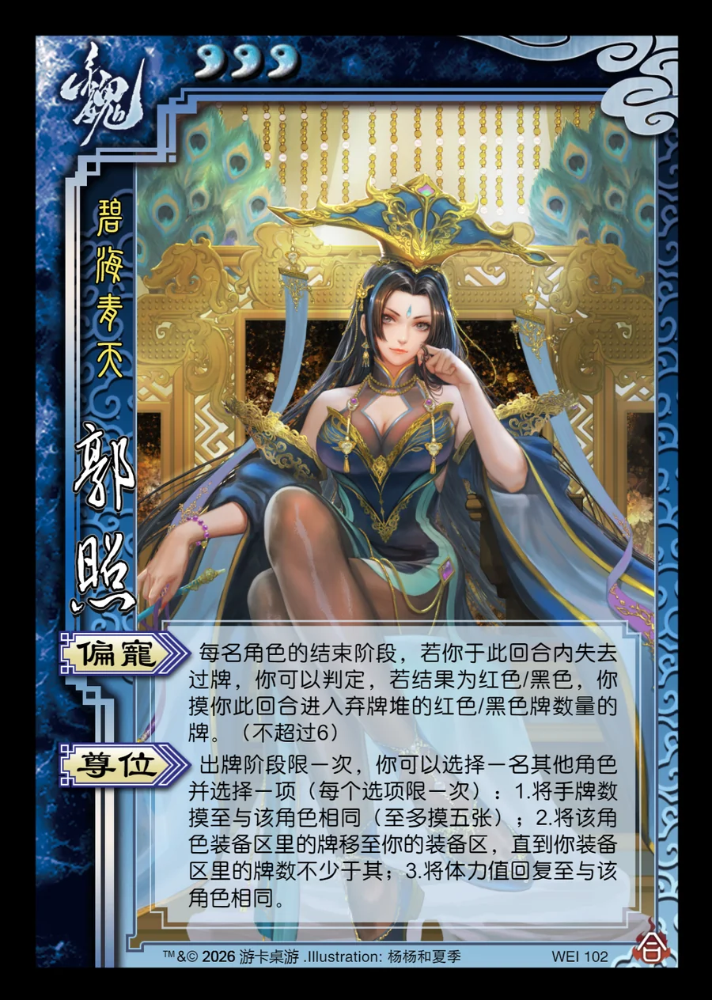

点击卡面查看大图
魏
合郭照
♥3碧海青天
偏宠
每名角色的结束阶段，若你于此回合内失去过牌，你可以判定，若结果为红色/黑色，你摸你此回合进入弃牌堆的红色/黑色牌数量的牌。（不超过6）
尊位
出牌阶段限一次，你可以选择一名其他角色并选择一项（每个选项限一次）：1.将手牌数摸至与该角色相同（至多摸五张）；2.将该角色装备区里的牌移至你的装备区，直到你装备区里的牌数不少于其；3.将体力值回复至与该角色相同。

点击卡面查看大图
碧海青天
每名角色的结束阶段，若你于此回合内失去过牌，你可以判定，若结果为红色/黑色，你摸你此回合进入弃牌堆的红色/黑色牌数量的牌。（不超过6）
出牌阶段限一次，你可以选择一名其他角色并选择一项（每个选项限一次）：1.将手牌数摸至与该角色相同（至多摸五张）；2.将该角色装备区里的牌移至你的装备区，直到你装备区里的牌数不少于其；3.将体力值回复至与该角色相同。